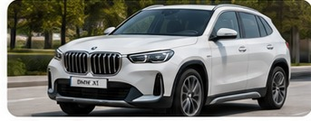
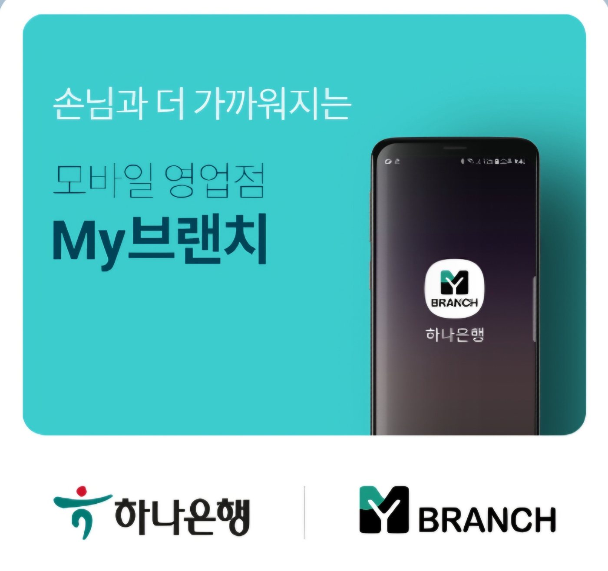
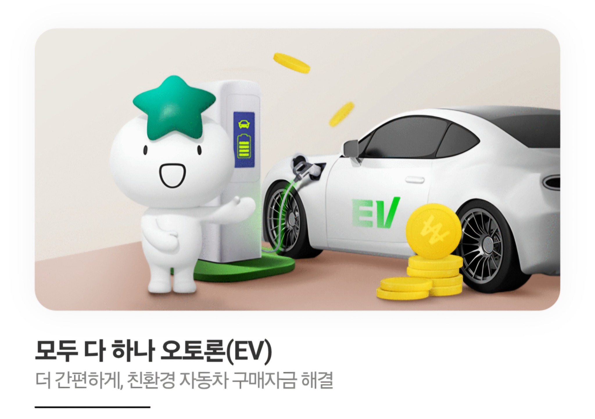
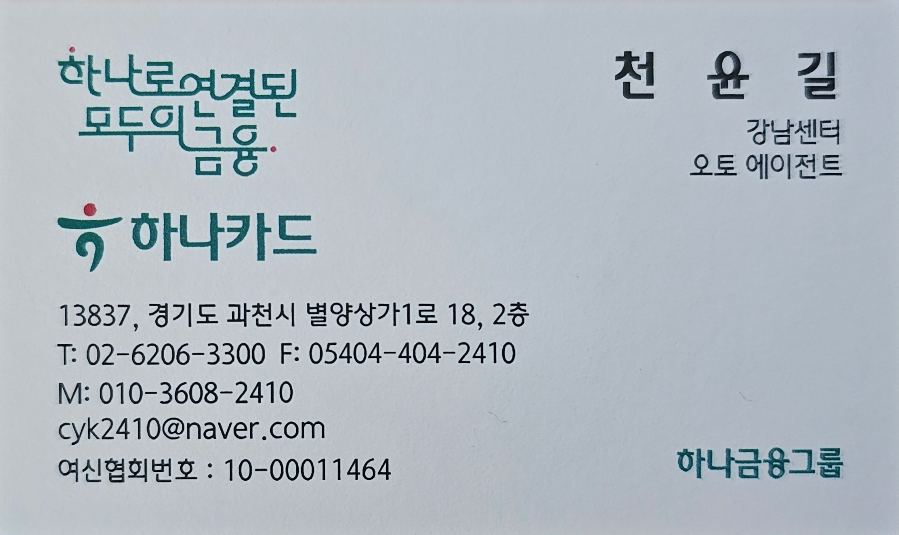

CASE 01은행 120개월·플랜B
벤츠 GLC300
60개월 월 부담을 고려해 은행 120개월과 부족금 보완을 비교한 사례.
- 차량가 / 필요금액
- 7,968만원
- 1차 조회
- 5,000만원
- 최종 승인
- 5,000만원
- 이용·부족금 구성
- 플랜B 1,968만원
 AG 천팀장NEW CAR FINANCE
AG 천팀장NEW CAR FINANCE차량 가격 · 선수금 · 매월 납입 부담
신용점수 · DSR · 향후 대출 계획
고객님의 현실적인 상환 계획부터 함께 살펴봅니다.

월 납입금과 총이자뿐 아니라 신용점수·DSR·차량 교체 및 중도상환 계획까지 고려해 하나은행 오토론과 해당 브랜드의 캐피탈·파이낸셜·카드할부 조건을 비교합니다.
1차 조회·최종 승인·실제 이용금액을 구분한 상담 사례입니다. 개별 승인 조건을 보장하지 않습니다.
60개월 월 부담을 고려해 은행 120개월과 부족금 보완을 비교한 사례.

48개월 후 자금 계획에 맞춰 승인 한도와 실제 이용 금액을 다르게 설계한 사례.
본심사 한도 조정 후 전체 차량 대금을 나누어 준비한 사례.
추가 금융 없이 부족한 차량 대금을 현금으로 해결한 사례.
월 부담을 낮추는 장점과 총이자·중도상환 조건을 함께 이해해야 고객님의 자금 계획에 맞는 선택을 할 수 있습니다.
장기 분할상환은 매월 납입 부담을 낮추기 위한 선택지입니다. 다만 동일한 대출금액과 금리라면 상환 기간이 길수록 총이자는 일반적으로 증가합니다.
120개월 약정은 월 원리금 부담을 낮출 수 있습니다. 대신 60개월과 비교할 때 총이자, 금리 변동 여부, 중도상환 조건을 함께 확인해야 합니다.
예를 들어 5년 후 차량을 매각하고 남은 대출원금을 상환할 수 있습니다. 상환 이후 기간의 이자는 일반적으로 발생하지 않지만, 실제 정산금과 중도상환수수료는 약정에 따라 확인해야 합니다.
기존 대출을 유지하면서 다른 차량을 구매하려면 추가 대출 심사, DSR, 기존 담보·매각 관련 약정과 상환능력을 확인해야 합니다. 누구에게나 가능한 방식은 아닙니다.
일부 원금을 미리 갚으면 이후 이자 부담을 줄일 수 있습니다. 다만 부분상환 허용 여부, 수수료, 비상자금과 상환 방식까지 고려해야 하므로 모든 상황에서 최선이라고 단정할 수는 없습니다.
월 상환능력, 예상 차량 보유 기간, 신용점수·DSR, 향후 주택담보대출 계획까지 함께 고려합니다. 1차 조회와 최종 승인 결과는 다를 수 있습니다.
AG천팀장 900건 이상 실제 진행 사례 보러가기. 두 블로그의 최신 게시글을 발행일 순으로 통합해 최대 6건 표시합니다.
한도와 월 납입금뿐 아니라 신용점수·DSR·향후 대출계획까지. AG 천팀장은 조회 전부터 실행·등록까지 고객의 조건을 종합적으로 검토합니다.

10년 이상 자동차 금융 상담 경험을 바탕으로 차량 가격과 선수금뿐 아니라 신용·소득·기존 대출·DSR 및 향후 주택담보대출 계획까지 함께 살펴봅니다.
단순한 한도 안내에 그치지 않고 1차 조회와 최종 심사를 구분하고, 필요한 경우 조건부 부족금 대안을 검토하며 약정·송금·차량 등록까지 진행 위험을 줄이는 상담을 지향합니다.
사전 진단 → 본심사·협의 → 부족금 대안 → 상환계획 → 실행·등록 확인
차량 가격과 필요 할부금액, NICE·KCB 신용점수, 소득·기존 대출·DSR, 향후 주택담보대출 및 전세자금 계획을 전화 상담에서 함께 확인합니다.
심사에 불리할 수 있는 조건을 미리 안내하고, 불필요한 조회를 줄이기 위한 진행 방향을 검토합니다.
핵심 장점 조회 전에 고객별 가능성과 주의점을 먼저 살핍니다.
사전 상담 후 필요한 한도조회와 소득증빙, 본심사 절차를 안내합니다. 확인 가능한 범위에서 금융사 본사 협의와 추가 심사조건을 검토합니다.
1차 조회금액은 최종 승인이 아니며, 최종 심사 결과와 실제 차량 구매금액을 비교해 부족금 여부를 확인합니다.
핵심 장점 조회 화면의 숫자만 믿고 계약을 서두르지 않도록 돕습니다.
은행 오토론 최종 승인액이 부족할 때 별도 금융상품의 적용 가능성, 병행 제한, DSR, 신용정보 반영 방식과 약정·실행 순서를 확인합니다.
병행이 어렵다면 현금 선수금 조정이나 차량 예산 변경 등 현실적인 대안을 함께 안내합니다.
핵심 장점 부족금을 단순히 다른 대출로 채우지 않고 전체 금융구조를 살핍니다.
60개월과 120개월의 월 납입금·총이자·중도상환 조건을 비교하고 기존 대출의 상환 부담까지 고려합니다.
필요하면 차량 구매예산을 낮추는 방향도 안내하며, 향후 주택 마련 등 금융계획에 미칠 수 있는 영향도 검토합니다.
핵심 장점 무리한 구매보다 지속 가능한 상환계획을 우선합니다.
금융상품별 심사·약정·실행 순서를 확인하고, 차량대금 송금 이후 카매니저를 통해 등록 결과를 점검합니다.
등록증의 소유자 및 공동명의 지분 등 계약과 연결되는 사항을 확인합니다.
핵심 장점 금융 승인에서 끝내지 않고 차량 구매 절차의 마무리까지 살핍니다.
AG 천팀장은 실무 상담에서 NICE·KCB 양사 약 750점 이상을 1차 참고 구간, 800점 이상을 상대적으로 유리한 구간으로 활용합니다. 이는 상담 경험에 따른 참고 기준이며 하나은행의 공식 고정 승인 커트라인은 아닙니다.
실제 한도는 소득·기존 채무·DSR·금융사 심사기준에 따라 달라집니다.
확인 가능한 부결 코드와 심사 사유, 신용정보·상환 이력·소득증빙 조건을 검토하고 보완할 수 있는 부분이 있는지 상담합니다.
조건 개선 후 재심사 가능성을 살펴볼 수 있지만 신용점수 개선이나 재승인을 보장하지 않습니다.
은행 한도가 부족하다고 다른 금융상품을 무조건 추가할 수는 없습니다. 승인 가능성과 병행 실행 가능성은 별개이며, 고객별 심사조건을 먼저 확인해야 합니다.
신용·소득·기존 대출·DSR·금융사별 심사 및 병행 제한에 따라 가능 여부가 달라집니다.
먼저 실행한 상품의 부채·신용정보 반영이 다른 상품의 심사와 실행에 영향을 줄 수 있습니다.
실행 가능성을 확인하지 않고 계약하면 출고 지연, 잔금 부족 또는 계약 취소 검토가 필요할 수 있습니다.
금융상품별 장단점과 심사·약정·실행 순서를 검토하고, 병행이 어렵다면 선수금 또는 차량 예산 조정 등 현실적인 대안을 안내합니다. 최종 진행 여부는 각 금융사의 심사와 계약조건에 따르며 승인·실행을 보장하지 않습니다.
차종·차량가·필요금액·신용·소득 상황을 바탕으로 검토할 항목과 진행 순서를 안내합니다.
제조사 파이낸셜·캐피탈 상품과 은행 최장 120개월을 비교할 때, 선수금·만기 잔액·총이자까지 함께 확인하세요.



사진을 클릭하면 큰 화면으로 내용을 확인할 수 있습니다.
※ 세 이미지는 이해를 돕는 참고자료이며, 이미지의 점수·금리·수수료·DSR 설명은 금융회사 공식 확정 심사기준이 아닙니다. 상품·시점·개별 약정에 따라 달라질 수 있으므로 실제 신청 전 최신 조건을 확인해야 합니다.
신차 구매 · 상품별 적용 가능 여부 확인
차량 판매처의 카드 결제 허용 및 상품 조건 확인
국산차·수입차 제조사 연계 금융 및 캐피탈 상품의 조건 비교
신용점수 유의 2금융권 캐피탈·파이낸셜의 고금리 대출상품을 이용하면 신용점수 하락의 원인이 될 수 있습니다. 다만 2금융권 이용 자체가 일률적인 하락을 의미하지 않으며, 실제 영향은 개인 신용상태·대출금리·부채·상환이력 등에 따라 다릅니다.
캐피탈·파이낸셜 상세 비교 ↓같은 원금과 금리라면 기간이 길수록 월 납입금은 낮아지지만 총이자는 증가할 수 있습니다. 일부 중도상환이나 3~5년 뒤 차량 교체 시 잔여 원금을 상환하면 이후 기간의 이자 부담을 줄일 수 있으며, 수수료 및 상환 조건은 약정별로 확인해야 합니다.
금리만이 아니라 월 납입금·총이자·신용·DSR·유예금 만기 부담을 함께 비교합니다.
60개월 상품이 많지만 기간과 프로모션은 상품별로 다릅니다. 제조사 특별금리·무이자 혜택이 유리할 수 있으며, 비대출형 카드할부는 DSR·중도상환 조건을 개별 확인해야 합니다.
36~60개월 상품과 유예형 금융상품 등을 비교합니다. 유예할부는 월 부담을 줄일 수 있지만 만기 유예금·차량 반납·재금융 조건이 중요합니다.
상품 기준 300만원 이상, 최대 6,000만원, 최장 120개월까지 검토할 수 있습니다. 월 납입금 부담을 분산할 수 있지만 총이자가 증가할 수 있으며, 신용·소득·DSR·최종 심사에 따라 조건이 달라집니다. 부족금 플랜B는 별도 심사·병행 제한·실행 순서 확인이 필요하고 누구나 이용할 수 있는 방법은 아닙니다.
국산차·수입차 브랜드를 선택해 금융상품의 기간·한도·선수금·DSR·월 납입금 확인사항을 살펴보세요. 특정 상품 이용은 심사와 제휴 조건에 따라 달라집니다.
현대자동차 신차 자동차할부 상담
기아 신차 자동차할부 상담
제네시스 신차 자동차할부 상담
KG모빌리티 신차 자동차할부 상담
쉐보레 신차 자동차할부 상담
벤츠 신차 자동차할부 상담
BMW 신차 자동차할부 상담
아우디 신차 자동차할부 상담
포르쉐 신차 자동차할부 상담
렉서스 신차 자동차할부 상담
테슬라 신차 자동차할부 상담
폭스바겐 신차 자동차할부 상담
간편 조회부터 최종 승인, 차량대금 결제까지 단계별로 확인합니다.
120개월·금리·DSR·카드할부·신용관리까지, 상담 전에 가장 많이 확인하는 질문을 정리했습니다.
1차 조회는 최종 승인이 아니며, 금융상품 이용은 심사 및 약정 조건에 따라 달라집니다.
차종·차량 가격·선수금·희망 기간을 알려주시면 검토할 항목과 조회 절차를 안내하겠습니다. 심사 결과를 보장하지 않습니다.
